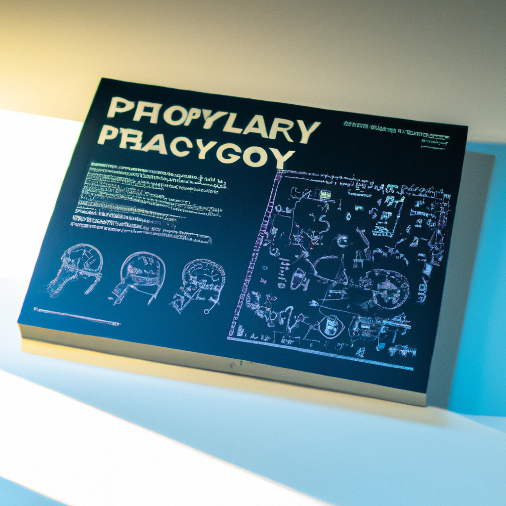

Will AI replace my job ! should I be scared
This is my edit
The rise of artificial intelligence (AI) has been the subject of much
debate in recent years, with many people wondering if their jobs are at
risk of being replaced by robots and machines. With the advances in
technology, it's no surprise that AI is becoming more and more prevalent
in the workplace. But should we be scared? The truth is, AI can be a great
asset to any organization and can help to increase efficiency and
accuracy. AI can automate mundane tasks that would otherwise take a human
worker far longer to complete. It can also help to identify patterns and
trends that might not be visible to the human eye. This can lead to new
opportunities for businesses, as well as help to make existing processes
more efficient. At the same time, there is no denying that some jobs may
become obsolete due to the introduction of AI. But this doesn't mean that
all jobs are at risk. In fact, many jobs will still require the skills and
expertise that can only be provided by humans. For example, positions such
as product development leaders, user experience designers, and AI experts
will still be at the forefront of the industry. In the end, it's important
to remember that AI is not a threat to employment, but rather a tool that
can be used to enhance productivity and effectiveness. Ultimately, it's up
to us to ensure that we use AI responsibly and ethically, and that we use
it to our advantage rather than to our detriment. So, instead of
The rise of artificial intelligence (AI) has been the subject of much debate
in recent years, with many people wondering if their jobs are at risk of
being replaced by robots and machines. With the advances in technology, it's
no surprise that AI is becoming more and more prevalent in the workplace.
But should we be scared?
The truth is, AI can be a great asset to any organization and can help to
increase efficiency and accuracy. AI can automate mundane tasks that would
otherwise take a human worker far longer to complete. It can also help to
identify patterns and trends that might not be visible to the human eye.
This can lead to new opportunities for businesses, as well as help to make
existing processes more efficient.
At the same time, there is no denying that some jobs may become obsolete due
to the introduction of AI. But this doesn't mean that all jobs are at risk.
In fact, many jobs will still require the skills and expertise that can only
be provided by humans. For example, positions such as product development
leaders, user experience designers, and AI experts will still be at the
forefront of the industry.
In the end, it's important to remember that AI is not a threat to
employment, but rather a tool that can be used to enhance productivity and
effectiveness. Ultimately, it's up to us to ensure that we use AI
responsibly and ethically, and that we use it to our advantage rather than
to our detriment. So, instead of